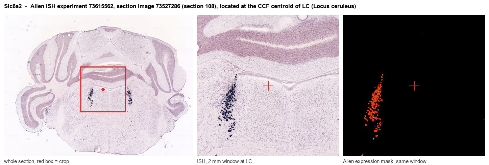

Slc6a2
Spatial tier: STRICT_EXCLUSIVE · Class: NEUROMODULATORY_SIGNAL · Top region: LC (Locus ceruleus) · Positive regions: 3/554
58.5Discovery Score
55.1Targetability Score
CEvidence grade C
What this means: Slc6a2: predicted fine-region profile is strict-exclusive, with 3 positive regions out of 554 (limit 12); direct spatial validation is required.
Function in LC: evidence, prediction, innovation
- Gene function
- Slc6a2 encodes the noradrenaline transporter NET, a Na+/Cl--dependent SLC6-family plasma-membrane transporter on noradrenergic axons and dendrites. It clears released noradrenaline, terminating signalling and recycling transmitter. NET is the target of desipramine, reboxetine and atomoxetine, and is hijacked by amphetamine and cocaine.
- Region function
- The locus ceruleus is the principal noradrenergic nucleus of the pons and supplies most forebrain noradrenaline, controlling arousal and sleep-wake state, attention and behavioural flexibility, stress responses, and pain modulation.
- Published in this region
- direct Direct and extensive. Slc6a2/NET is a canonical marker of locus ceruleus noradrenergic neurons and defines their uptake capacity; Xu et al. 2000 (Nat Neurosci) showed NET-null mice have elevated extracellular noradrenaline, reduced tissue noradrenaline stores and supersensitivity to psychostimulants, with altered noradrenergic neuron function. Wang et al. 1999 (Biol Psychiatry) described the knockout and its noradrenergic phenotype; Gilsbach et al. 2006 (J Neurochem) reported compensatory up-regulation of brain alpha2A/alpha2C-adrenoceptors after NET deletion.
- Predicted function
- Prediction: NET sets somatodendritic and terminal noradrenaline clearance in the locus ceruleus, constraining alpha2-autoreceptor feedback and firing mode. Loss of NET or local reuptake blockade raises ambient noradrenaline, damping tonic locus ceruleus firing by autoinhibition while amplifying forebrain noradrenergic tone, giving hyperarousal, reduced sleep and antidepressant-like behaviour. Chemogenetic manipulation of NET+ neurons should shift arousal and stress-induced anxiety.
- Innovation
- ★☆☆☆☆ 1/5 NET in the locus ceruleus is one of the best-characterised transporter-region pairings in neuroscience, with decades of pharmacology and knockout work.
- Tools
- Slc6a2 (NET) knockout mice (Xu 2000); noradrenergic access via Dbh-Cre and Th-Cre lines and PRSx8 (Dbh-promoter) AAV; blockers nisoxetine, reboxetine, atomoxetine, desipramine; PET ligand (S,S)-[11C]MRB; anti-NET antibodies (NET-05).
- References
Direct evidence located at the region

Allen ISH experiment 73615562, section image 73527286 (section 108): the section that contains the CCF centroid of Locus ceruleus according to the Allen image-to-atlas alignment (reference_to_image), with a 2 mm window around that point. Left: whole section, red box = window. Middle: ISH signal. Right: Allen's expression-mask view of the same window. open this image in the Allen viewer
Look it up yourself: Allen Mouse Brain ISH for Slc6a2Allen reference atlas: LC (structure 147)ABC Atlas MERFISH viewer(in the ABC Atlas choose dataset MERFISH-C57BL6J-638850-CCF, colour cells by gene "Slc6a2" or by parcellation_substructure "LC")All genes confined to LC + 3-D brain
Direct spatial evidence
MERFISH REGION LOCATOR

DIRECT ALLEN ISH

DIRECT ALLEN ISH

Regional expression figure

Predicted WMB × fine-CCF profile; not direct full-transcriptome spatial measurement.
Spatial profile
Evidence and specificity
- Evidence status
- PREDICTED_FINE
- Direct sources
- None; predicted localization only
- Exclusive threshold
- 12 positive regions out of 554
- Spatial specificity
- 0.657
- Top-region fraction
- 0.357
- Filter status
- PASS
Interpretation limits
- Cell-type-to-region projection is imputed expression, not direct spatial measurement.
- Adult reference atlases do not establish stability across age, sex, strain, state, or disease.
- Transcript abundance does not guarantee protein abundance or genetic-tool performance.